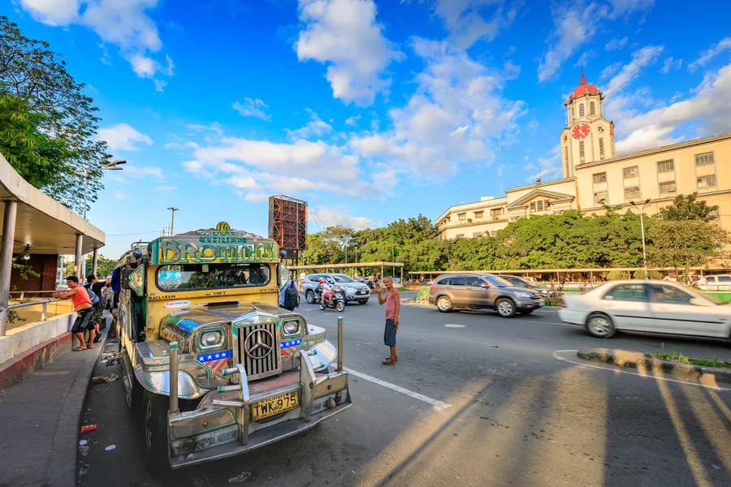
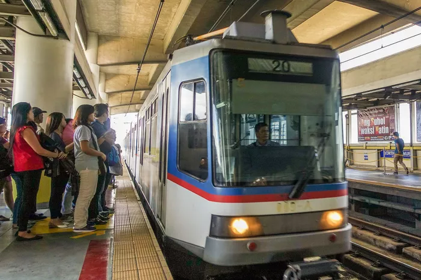
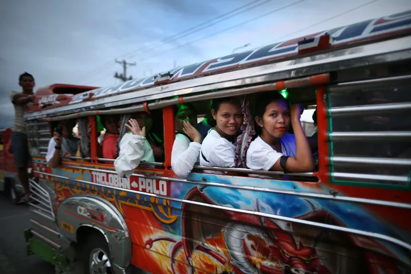

"Metro Manila", or the agglomeration of the historic city of Manila
plus Quezon City, Pasig, San Juan, Makati and thirteen other
neighboring towns and cities, is a big, sprawling mess of modern
skyscrapers, worn-down warehouses, stately houses and slums.

Tourists tend to stay away from immersing themselves fully in Manila,
preferring to jet off immediately to more pleasant Philippine spots
like Boracay, Siargao and Bohol. (If you're one of them, you'll want
to read our how-to for traveling to the Philippines while avoiding
Manila, or our list of best beaches in the Philippines.)
But skipping Manila means you skip out on an interesting experience.
Even the much-warned-about transportation in Manila can be easy (at
the very least, tolerable) if you follow a few simple rules of thumb.
Riding Manila's LRT and MRT Railway Systems

A single shuttle bus links NAIA Terminal 3 with the Pasay interchange
(location on Google Maps) connecting Manila's two main light rail
lines, the MRT and the LRT (further divided into lines 1 and 2).
Riding the rails can be fun if you strictly avoid riding during
weekday rush hours (7 am to 9 am; 5 pm to 9 pm), when each train car
transforms into a seething mass of tightly packed people.
Fares cost between $0.25 and $0.50, stored in contactless magnetic
cards that you place over turnstiles for easy access.
Riding Buses and Jeepneys
Air-conditioned and regular non-aircon buses cover many major routes
throughout Metro Manila and outward. These buses are mostly used by
local commuters to get to and from work.
Fare for Manila buses cost between $0.20 and $1, depending on the
distance of your trip; tickets are issued by "conductors" on the
buses, whom you pay as they pass by on the bus aisle.

Point-to-point (P2P) buses traverse Manila's awful traffic to connect
major malls and business districts. For many commuters, P2P buses
represent the most comfortable way to get around Manila, though not
the cheapest; fares range from around US$1.50 to US$3.50 in local
currency.
Buses and jeepneys are hard to understand if you're a first time
Manila visitor, but if you can hack them, these offer the cheapest way
to get from point A to point B within Manila. To make sense of the
transport situation, the website Sakay.ph ("sakay" means "to ride" in
Filipino) allows travelers to input points A and B, upon which the
website generates a route using the MRT/LRT, bus and jeepneys along
the way.